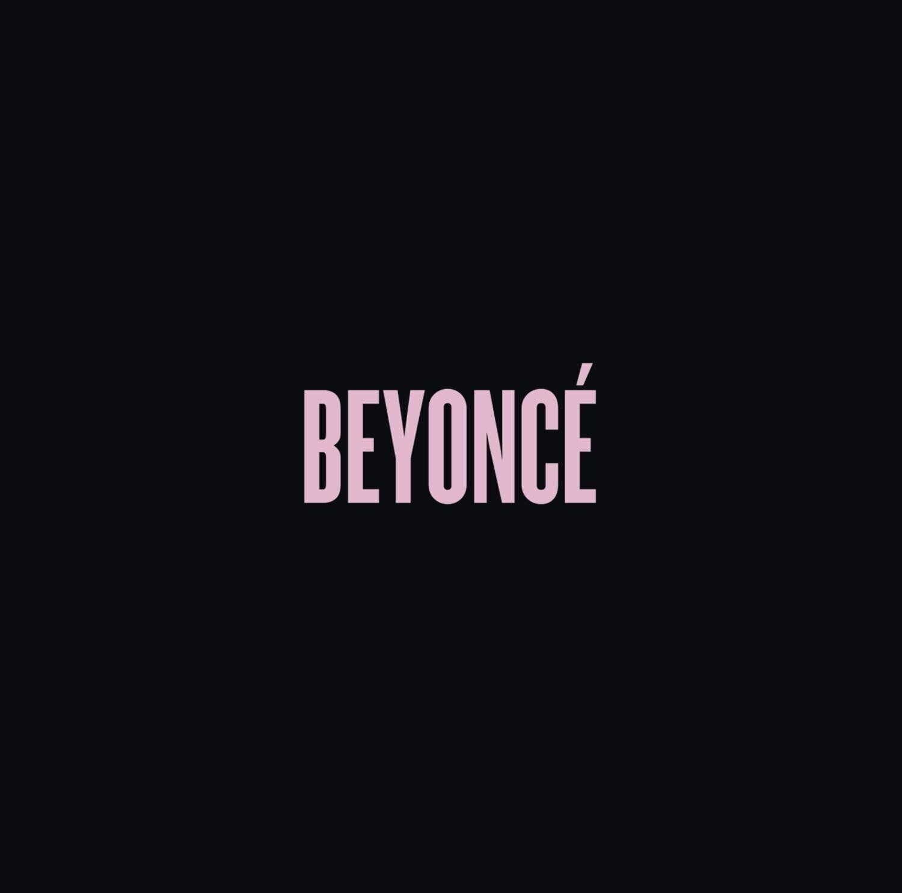

Beyoncé: Beyond the Spotlight
Beyoncé, the definition of talent and grace, has carved an enduring legacy in both the music and fashion industries, shaping the cultural landscape in ways unparalleled.
In the realm of music, she stands as a beacon of innovation and artistry.
With a career spanning decades, her influence on the music industry is immeasurable.
From her early days as a member of Destiny's Child to her solo stardom, Beyoncé has consistently pushed boundaries, blending genres and delivering chart-topping hits that resonate globally.
Her albums, such as "Lemonade" and "Beyoncé," not only showcase her vocal prowess but also address important social and political issues, elevating the impact of her music beyond mere entertainment.

In the world of fashion, Beyoncé reigns supreme as a trendsetter and fashion icon.
Her fearless approach to style has redefined the fashion industry, inspiring designers and enthusiasts alike. Whether she's gracing red carpets in couture gowns or rocking streetwear with unmatched confidence, her fashion choices spark trends and set new standards.
Beyoncé's influence on pop culture transcends music and fashion; she represents empowerment, feminism, and unapologetic individuality.
Through her activism, philanthropy, and powerful performances, she has become a symbol of strength and resilience, inspiring generations and leaving an indelible mark on the fabric of society.
Beyoncé's legacy is not just in her chart-topping songs and glamorous outfits but in the profound impact she has had on shaping the world's cultural narrative.